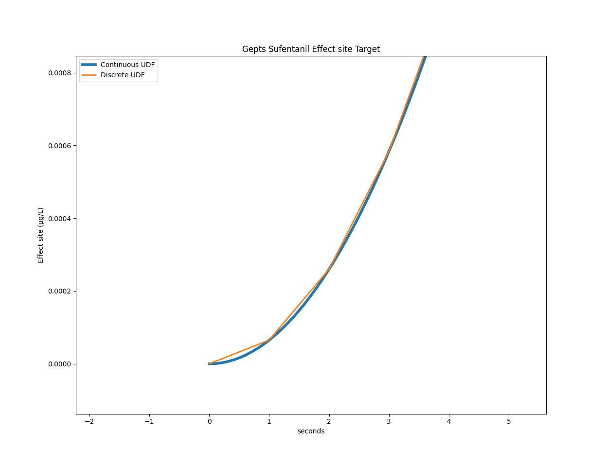
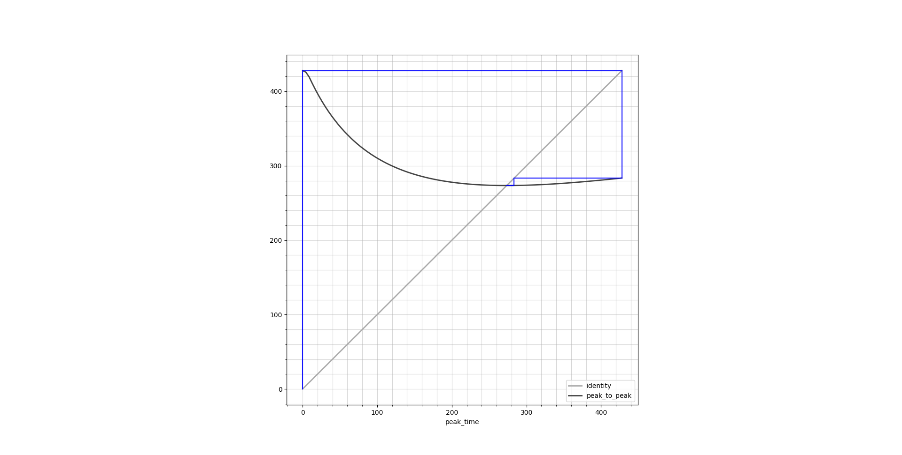
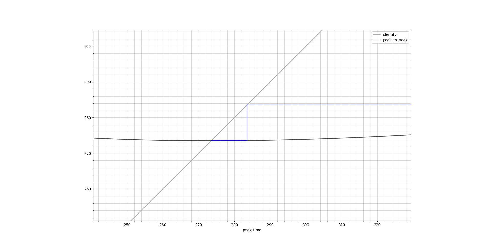
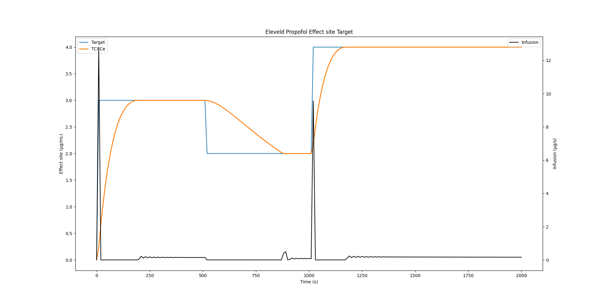

def udf_continuous(
lambdas: NDArray[np.float64],
coefs: NDArray[np.float64],
delta_seconds: float,
):
def model(A: NDArray[np.float64], rate: float, t: float):
ls = np.exp(-lambdas * t)
return A * ls + coefs * rate * (1 - ls)
# Pre-compute the state at boundary values
state_at_zero = np.zeros(4)
state_at_cutoff = model(state_at_zero, rate=1, t=delta_seconds)
@np.vectorize
def piecewise(t: float):
if t < delta_seconds:
res = model(state_at_zero, rate=1, t=t)
else:
res = model(state_at_cutoff, rate=0, t=t - delta_seconds)
return np.sum(res)
return piecewiseMore tales from the Unit Disposition Function
The unit disposition function (UDF), as explained in our previous blog post, shows the PKPD system response to a unit infusion. This response is an important characteristic of any model and is called the step response in engineering and control theory.
In order to calculate it, we use the model equation for which STANPUMP includes closed form solutions. What is particular about these formulas is that they cannot be established for arbitrary time varying infusion profiles since the equations become intractable1. Instead, these formulas are only valid for constant infusion rate. Despite this limitation, the formulas remain useful due to the superposition principle which is an important property that emerges from the fact that the models are linear. Thanks to the superposition principle it is possible to handle infusion rate changes by switching to a new instance of the formula with the new infusion rate and which has its initial state copied over from the previous infusion. Rate changes introduce boundaries and the formula is valid from one boundary to the other. It is thus possible to obtain smooth model responses with infinite precision while advancing from one rate boundary to the other. For this reason, the formulas are called advancers or ADVAN in the NONMEM community and solutions are generally available for most common PK models2. In mathematics, the formulas would be called state transition functions.
This means that, while STANPUMP has decided to precalculate the UDF at discrete intervals of 1 second for CPU efficiency, we are not bound to this decision and we can use a smooth analytic UDF with infinite precision.
Below is the Python implementation of a continuous UDF with unit infusion up to 10 seconds and zero infusion afterwards.
Now this code bears some complexity and we will go over it step by step. First of all, there are two function defined inside of the function. These are called closures and they can share state with the parent function. The parent actually returns one of these closures as its result. This means that this function is a factory for creating a UDF which includes all the necessary parameters and depends only on time. The @np.vectorize function decoration is a neat feature which makes it possible to use the function not only with a single value of time but apply it directly to a list or vector of time values and obtain a list of effect site concentrations corresponding to the time values as seen below:
my_udf = udf_continuous(lambdas, coefs.e_coef, delta_seconds)
print(my_udf([0, 5, 10, 15, 20, 50, 100, 200, 500, 1000, 10000]))
[0. 0.00161781 0.00641626 0.0126963 0.01881552 0.05233268
0.09734208 0.15557019 0.19195808 0.13101536 0.01181284]The model function contains the actual closed form solution of the three compartment model with effect site concentration. This function will be called either with a zero state and unit infusion when a value between 0 and 10 seconds is asked or with zero infusion and a state corresponding to the end of the 10 second infusion if a value is asked beyond the 10 seconds boundary. The function is thus piecewise defined with boundaries corresponding to rate changes.
Below are two graphs comparing the discrete and continuous UDF:


For the Gepts model, STANPUMP calculated a peak time of 428 seconds. Using the continuous UDF, we can calculate it to be at 427.99173072102536 seconds.
Now this precision comes at a price. If we consider the Gepts model with the infusion scheme presented in the previous post with three target changes, the original code takes on average 3.19 seconds on my laptop. With the continuous UDF it takes 16.21 seconds on average. This is a real hit on performance and makes it unusable for TCI. But maybe there is something we can do about that.
Fixed Point iteration
Let’s take a closer look at the main inner loop optimization for effect site TCI. The loop starts with while not ok_condition: and loops until it found parameters which yield a Ce close enough to the target value at the end of the 10 second frame. It jointly optimizes the context sensitive peak time peak_time_tmp and infusion rate rate_candidate. It starts with initial values, checks for the terminating condition. If the condition is not met, it loops and takes as initial values the ones obtained from the previous run. It returns when values have converged and are no longer changing.
# Set target
if t <= 500:
current_target = 0.2
elif t <= 1000:
current_target = 0.3
else:
current_target = 0.1
targets.append(current_target)
# Calculate new rate
ok_condition = False
peak_time_tmp = peak_time
rate_candidate = 0
while not ok_condition:
virtual = tci.virtual_model(Ae, peak_time_tmp, peak_time, lambdas, True)
residual = current_target - virtual
rate_candidate = residual / udf(peak_time_tmp)
if rate_candidate <= 0:
rate_candidate = 0
ok_condition = True
continue
peak_time_tmp = find_peak(
peak_time_tmp,
rate_candidate,
Ae,
peak_time,
lambdas,
udf,
delta_seconds,
)
virtual = tci.virtual_model(Ae, peak_time_tmp, peak_time, lambdas, True)
predicted_ce = virtual + udf(peak_time_tmp) * rate_candidate
ok_condition = (
np.abs(predicted_ce - current_target) <= 1e-7 * current_target
) # STANPUMP cutoff
rate = rate_candidate
rates.append(rate)This algorithm is called fixed point iteration. It is looking for fixed points of a function. Fixed points of a function obey the equality
\[ f(x_{\text{fix}}) = x_{\text{fix}} \]
We try to find the right \(x\) so that \(f(x)\) returns \(x\). In our case, we have two variables peak_time_tmp and rate_candidate so we can either define \(x\) to be a 2-element vector or write \(f(x, y) = (x, y)\).
If you ask AI to analyze the algorithm, it might tell you that the particular variant used by STANPUMP to solve the fixed point problem is called the Gauss–Seidel method (but don’t quote me on this).
There is a key difference however in the STANPUMP algorithm when compared to the classic fixed point iteration problem. The fixed point condition is \(f(x) = x\) whereas STANPUMP uses this result to calculate the Ce and sets the condition on the Ce being equal to the target Ce, rather than then peak time and rate.
However, we might still get away with our standard fixed point algorithm. Indeed, predicted_ce is completely determined by peak_time_tmp and rate_candidate so if we solve for these two, we automatically solve predicted_ce.
Below is the function definition for \(f\), called peak_to_peak.
def peak_to_peak(state, Ae, current_target, udf, peak_time, lambdas, delta_seconds):
rate_candidate, peak_time_tmp = state
virtual = tci.virtual_model(Ae, peak_time_tmp, peak_time, lambdas, True)
residual = current_target - virtual
# Handle target decrease
if residual <= 0:
return np.array([0.0, float(peak_time_tmp)])
rate_candidate = residual / udf(peak_time_tmp)
peak_time_tmp = find_peak(
peak_time_tmp,
rate_candidate,
Ae,
peak_time,
lambdas,
udf,
delta_seconds,
)
return np.array([rate_candidate, peak_time_tmp])Once we defined it, we can use the fixed_point function from the SciPy3 optimize library. It will return rate and peak time but we discard the latter one because we only need rate.
from scipy.optimize import fixed_point
if t <= 500:
current_target = 0.2
elif t <= 1000:
current_target = 0.3
else:
current_target = 0.1
targets.append(current_target)
rate, _ = fixed_point(
peak_to_peak,
(0, peak_time),
args=(Ae, current_target, udf, peak_time, lambdas, delta_seconds),
)
rates.append(rate)If we look at the peak_to_peak function, we see something very interesting. rate_candidate is passed as an argument to the function but it is never used in the calculation. It is overwritten by the line rate_candidate = residual / udf(peak_time_tmp) without having had any effect on the calculation. Could it be that it is not needed at all? That the only thing we actually need to optimize in the peak time?
Univariate fixed point iteration
def peak_to_peak(state, Ae, current_target, udf, peak_time, lambdas, delta_seconds):
peak_time_tmp = state.item()
virtual = tci.virtual_model(Ae, peak_time_tmp, peak_time, lambdas, True)
residual = current_target - virtual
rate_candidate = residual / udf(peak_time_tmp)
peak_time_tmp = find_peak(
peak_time_tmp,
rate_candidate,
Ae,
peak_time,
lambdas,
udf,
delta_seconds,
)
return np.array([peak_time_tmp])
peak_solution = fixed_point(
peak_to_peak,
x0=[peak_time_max],
)
peak_final = peak_solution.item()
# Calculate final rate from converged peak
virtual = tci.virtual_model(Ae, peak_final, peak_time, lambdas, True)
rate= (current_target - virtual) / udf(peak_final)
rate = max(rate, 0)
rates.append(rate)The above code is a rewrite of the peak_to_peak function with a single argument, namely peak_time_tmp. Infusion rate is not needed at all during the optimization. We need to add some additional code after we obtain the result because we now get the peak time and we need to calculate the actual corresponding infusion rate.
If we run this code on the same laptop, it should be faster, right? We really reduced the number of calculations required in the inner loop, removing the calculation of Ce and rate altogether. The disappointment is great: 25.70 seconds on average. But wait, the fixed_point function has a tolerance parameter xtol. Its default value is 1e-08. So we calculate peak time with a precision of 1e-08 seconds. STANPUMP has peak time precision of 1 second.
Let’s set xtol = 0.1 # seconds. Now we are getting somewhere, mean execution time is down to 1.66 seconds!
Cobweb plots
Fixed point iteration has a very nice graphical way of illustration by the means of cobweb plots. These plots show the identity line \(y = x\) as well as the function output \(y = f(x)\), both over the entire function domain. Ideally they should cross in a single point which is the result we are looking for. Below are cobweb plots which show the peak time calculation corresponding to a transition from Ce = 0.1 μg/L to 0.4 μg/L.



find_peak
At the center of the inner loop is a very important function which we have not visited yet: find_peak. This function is a straight-forward hill climbing algorithm which takes the predicted Ce curve resulting from the candidate rate and finds the maximum of the curve. It does this with steps of 1 second to approach the peak. This is an integer programming algorithm. While general integer programming is NP-complete, this specific problem is tractable because we’re searching a 1D unimodal function where hill climbing guarantees finding the global optimum in polynomial time. However it means that there are not many well tested optimizations for this. However, we now have a continuous UDF with floating point support. Having floating support gives access to an entire range of standard minimization functions.
I use the standard method proposed by the SciPy minimize_scalar function, which uses Brent’s method. This is a minimizer whereas we want to maximize the function to find the peak. Hence we need to change the objective by putting a minus in front.
def find_peak(
current_time: int,
rate: float,
Ae: list[float],
peak_time: int,
lambdas: list[float],
e_udf: Callable,
delta_seconds: int,
) -> int:
def objective(t):
return -(tci.virtual_model(Ae, t, peak_time, lambdas, True) + e_udf(t) * rate)
result = minimize_scalar(
objective,
bounds=(delta_seconds, peak_time),
method="bounded",
options={"xatol": 0.1}, # 0.1 second tolerance
)
return result.xIf I time it, this does not dramatically increase speed with a mean execution time of 1.54 seconds. It makes sense that the fixed point function has more impact here because if it reduces its number of iterations, it removes calls to find_peaks altogether. However, if we compare to the previous code below, we gained a lot of readability on top of using a battle tested optimizer:
def find_peak(
current_time: int,
rate: float,
Ae: list[float],
peak_time: int,
lambdas: list[float],
e_udf: list[float],
delta_seconds: int,
) -> int:
"""Find the time when effect site concentration will peak"""
# Calculate concentrations at three time points
current = (
tci.virtual_model(Ae, current_time, peak_time, lambdas, True)
+ e_udf(current_time) * rate
)
earlier = (
tci.virtual_model(Ae, current_time - 1, peak_time, lambdas, True)
+ e_udf(current_time - 1) * rate
)
later = (
tci.virtual_model(Ae, current_time + 1, peak_time, lambdas, True)
+ e_udf(current_time + 1) * rate
)
# Search for peak
while current < earlier or current < later:
if current < earlier:
if current_time == delta_seconds:
return current_time
current_time -= 1
later = current
current = earlier
earlier = (
tci.virtual_model(Ae, current_time, peak_time, lambdas, True)
+ e_udf(current_time) * rate
)
else:
current_time += 1
earlier = current
current = later
later = (
tci.virtual_model(Ae, current_time + 1, peak_time, lambdas, True)
+ e_udf(current_time + 1) * rate
)
return current_timeWith all these modifications, we still obtain the exact same result as previously with our TCI profile:

Infusion rate wobble
If we zoom in onto the infusion rate, we see that there is quite some wobble.

As Shafer and Gregg1 write:
This algorithm rapidly converges on the correct solution for I. Implementation of this algorithm produces an oscillation of the infusion rate during maintenance of constant concentrations. This is a result of the use of discrete time rather than continuous time. Once the effect site concentration peaks at the target concentration, the effect site concentration necessarily equals the plasma concentration. In our own implementation we found that once the effect site concentration is within 5% of the desired target, we simply maintain the plasma concentration at the desired target, which is easily calculated
Indeed, if we reduce delta_seconds from 10 seconds to a lower value, the wobble is considerably reduced. STANPUMP implements the smart trick highlighted above where it switches to plasma targeting when it gets close to the target, thereby completing removing this effect.
Eleveld Propofol example
Of course all of this is not only valid for the Sufentanil model. Below is an example which uses the Eleveld Propofol model for a male individual of 35 years, weighing 75 kg and measuring 175cm.
model = tci.Parameters(
k10=0.2577585580908108, # min⁻¹
k12=0.2913939174276039, # min⁻¹
k13=0.12286871331825001, # min⁻¹
k21=0.07179436034656034, # min⁻¹
k31=0.004586708876899454, # min⁻¹
ke0=0.14631, # min⁻¹
vc=6.283, # L
)Discrete peak time: 195 seconds, continuous UDF peak: 194.50040271047075 seconds. 
Closing
We went from 3.19 seconds execution time to 1.54 seconds while improving precision. Did we actually beat STANPUMP? Far from it, we beat a naive Python reimplementation of the STANPUMP algorithm by using streamlined algorithms written in C from state of the art libraries. STANPUMP will take orders of magnitude less time on modern hardware for these calculations. However, I hope we gained greater insight into the algorithms by finding patterns and generalizing them. Maybe modern hardware and algorithms can bring a bright future to TCI with continuous improvement and modernization.
References
1.
Shafer SL, Gregg KM. Algorithms to rapidly achieve and maintain stable drug concentrations at the site of drug effect with a computer-controlled infusion pump. Journal of Pharmacokinetics and Biopharmaceutics [Internet] 1992 [cited 2025 Aug 19]; 20: 147–69 Available from: http://link.springer.com/10.1007/BF01070999
2.
Abuhelwa AY, Foster DJR, Upton RN. ADVAN-style analytical solutions for common pharmacokinetic models. Journal of Pharmacological and Toxicological Methods [Internet] 2015 [cited 2025 Aug 19]; 73: 42–8 Available from: https://linkinghub.elsevier.com/retrieve/pii/S1056871915000362
3.
Virtanen P, Gommers R, Oliphant TE, et al. SciPy 1.0: Fundamental Algorithms for Scientific Computing in Python. Nature Methods 2020; 17: 261–72
Reuse
Citation
BibTeX citation:
@online{joachim2026,
author = {Joachim, Jona},
title = {TCI - Caught in the Inner Loop},
date = {2026-02-16},
url = {https://jaj42.github.io/blog/posts/202602_moderntci/index.html},
langid = {en}
}
For attribution, please cite this work as:
Joachim J. TCI - caught in the inner loop
[Internet]. 2026. Available from: https://jaj42.github.io/blog/posts/202602_moderntci/index.html